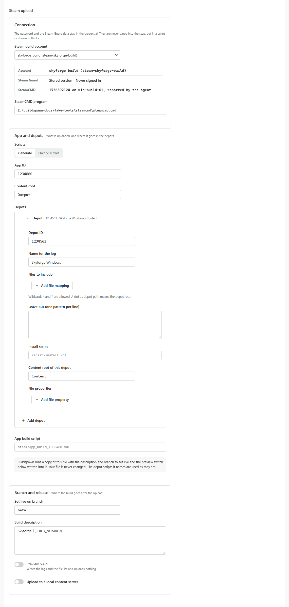
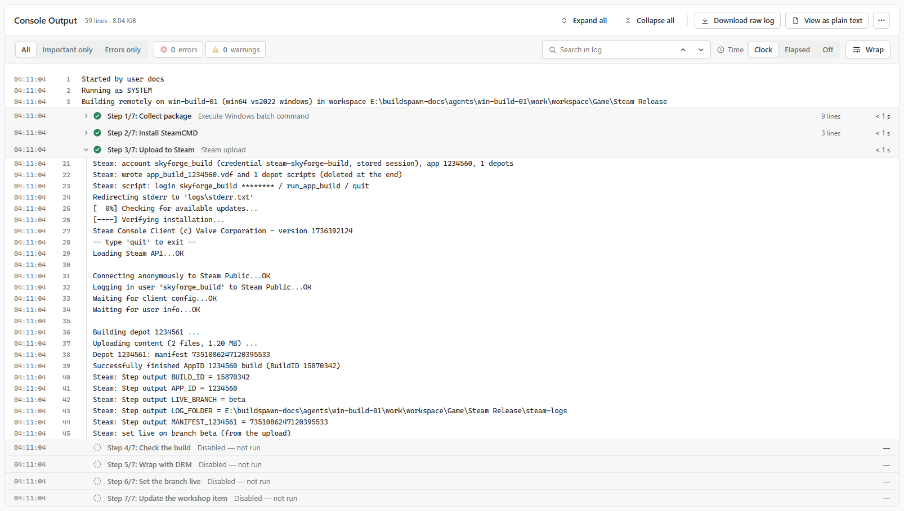

Steam upload
Upload your game's files to Steam as depots, and optionally set the new build live on a beta branch.
When to use it
Use it at the end of a game build, after the files you want to ship are on the agent. It runs SteamCMD with the Steam build account, writes the Steam build scripts for you from the form (or runs your own), and gives later steps the BUILD_ID.
How to set it up
- Make sure the agent has SteamCMD. Add Install SteamCMD before this step if not.
- Open the build configuration and go to Settings › Build steps › Add build step › Steam upload.
- Under Connection, choose the Steam build account. The card shows the account, its Steam Guard mode and the SteamCMD found.
- Under App and depots, keep Scripts on Generate. Type the App ID, the Content root and add one row for each depot.
- Under Branch and release, type the beta branch in Set live on branch, or leave it empty to upload only.
- Click Save.

The Scripts card at the end of the form shows the generated app build and depot scripts, so you can check them before you run. They hold no secret.
Every field
Connection
| Field | What it does | Default | Example |
|---|---|---|---|
| Steam build account | The credential to sign in with. Required. | None | steam-build |
| Account, Steam Guard, SteamCMD (read only) | Show the user name, the Steam Guard mode (stored session, machine login or generated codes) and where SteamCMD was found. | ||
| SteamCMD program | Full path of SteamCMD. Leave empty to use the one the agent reported. | Found on the agent | D:\tools\steamcmd\steamcmd.exe |
App and depots
| Field | What it does | Default | Example |
|---|---|---|---|
| Scripts | Generate writes the Steam scripts from this form. Own VDF files runs scripts you keep in the workspace. | Generate | Generate |
| App ID | The number of your app on Steam. Must be a number. | None | 1000480 |
| Content root | Folder with the files to upload, relative to the workspace. | . | Builds/Win64 |
| Depots | One row per depot. At least one. See the next table. | One empty row | |
| App build script (own mode) | Path of your own app build script in the workspace. Buildspawn runs a copy with the description, the branch and the preview switch written in. Your file is never changed. The depot scripts it names are used as they are. | None | steam/app_build_1000480.vdf |
Each depot row has:
| Field | What it does | Default | Example |
|---|---|---|---|
| Depot ID | The depot number. Must be a number. A depot listed twice is uploaded once. | None | 1000481 |
| Name for the log | A label for the build log only. | Empty | Windows |
| Files to include › File mapping | Rows that choose files. Wildcards * and ? are allowed. Each row has Local path, Depot path (a dot means the depot root) and Include subfolders. A depot with no row uploads nothing, and the step warns. | None | Local *, depot ., subfolders on |
| Leave out (one pattern per line) | Files to skip. | Empty | *.pdb |
| Install script | A file Steam runs on the player's machine at install, for example for redistributables. | Empty | redist\install.vdf |
| Content root of this depot | Overrides the app's content root for this depot. | Same as the app | Builds/Win64 |
| File properties | Rows of File and Kind: Player configuration (the player may change the file) or Versioned configuration (Steam keeps the player's changes between versions). | None; kind defaults to Player configuration | settings.ini |
Branch and release
| Field | What it does | Default | Example |
|---|---|---|---|
| Set live on branch | Beta branch to set the build live on as part of the upload. Empty means upload only. default and public are refused. The branch must exist in Steamworks. | Empty (upload only) | nightly |
| Build description | Text shown in the build list in Steamworks. Quotes and line breaks are removed. You can use parameters. | Empty | %build.number% CL%build.vcs.number% |
| Preview build | Writes the logs and the file list, uploads nothing. Steam gives no build ID. | Off | Off |
| Upload to a local content server | Sends the build to a local content server instead of Steam. Shows Folder of the content server. The branch named local must exist in Steamworks and have a password, and players need the content server address in their Steam setup. | Off | D:\htdocs |
Options
| Field | What it does | Default | Example |
|---|---|---|---|
| Build output folder | Where SteamCMD keeps its chunk cache and logs. By default a folder per app on the agent, outside the workspace, so a clean workspace does not lose the cache. | On the agent, outside the workspace | E:\steam-output |
| Stop after (minutes) | Stops the whole SteamCMD process tree after this time. | 120 | 240 |
| Keep the chunk cache | Later uploads send only what changed and are much faster. | On | On |
| Save the SteamCMD logs as build artifacts | Saves the folder steam-logs, also when the step fails. | On | On |
| Fail the build on warnings | Fails when, for example, a file mapping matches no file. | Off | On |
| Try again on network errors (tries) | How many times to try. Only network failures are tried again, never a failed login. | 1 | 3 |
| Wait between tries (seconds) | Pause before the next try. | 30 | 60 |
| Wrap these files with the Steam DRM wrapper first | Rows of Program to wrap, Where the wrapped file goes (empty replaces the program) and Level. It runs in the same sign-in, before the upload. See Steam: DRM wrap for the levels. | None | Builds\Win64\Skyforge.exe |
| Hands on to later steps | The values the step sets: BUILD_ID, APP_ID, LIVE_BRANCH and LOG_FOLDER. | Not editable |
A worked example
Skyforge is app 1000480 with one Windows depot 1000481. The Unity step wrote the player to Builds/Win64.
| Field | Value |
|---|---|
| Steam build account | steam-build |
| App ID | 1000480 |
| Content root | Builds/Win64 |
| Depot 1000481, name | Windows |
| File mapping | Local path *, Depot path ., Include subfolders on |
| Leave out | *.pdb |
| Set live on branch | nightly |
| Build description | %build.number% CL%build.vcs.number% |
What you see when it runs
[Step 4/5] Steam upload
Steam: account build_ci (credential steam-build, stored session), app 1000480, 1 depots
Steam: wrote app_build.vdf and 1 depot scripts (deleted at the end)
...SteamCMD output, passwords hidden...
Steam: Step output BUILD_ID = 15870342
Steam: set live on branch nightly (from the upload)
Steam: logs saved to steam-logs (3 files)- The logs are under Artifacts as
steam-logs. - With Preview build, the log says Preview build: nothing was uploaded and Steam gave no build ID.
- If another build is using the same account on the same agent, the step says Waiting for another Steam upload with the same build account. Uploads with one account on one agent run one after the other.

Problems and fixes
| Message | What to do |
|---|---|
| SteamCMD was not found on the agent | Add Install SteamCMD before this step, or fill in SteamCMD program. |
| Steam asked for a Steam Guard code. Sign in again on the credential | The stored session ran out. Sign in again on the credential. The login is not tried again, to protect the account. |
| Steam refused the password for the account | Update the password on the credential. |
| Steam refused the build | Check that the account may publish the app, and that the content root and local paths hold files. |
| Check the App ID … | Check the App ID, that your Steamworks setup is published and that the account may use the app. |
| SteamCMD could not reach Steam | Check the network or proxy on the agent. Set tries above 1 to retry. |
| The branch … cannot be set live by a build. Nothing was uploaded. | You typed default or public. Use a beta branch, or set the default branch live in Steamworks. |
| Branch … does not exist for app … | Create the branch on the Builds page in Steamworks. |
| The person who started this build may not set a branch live | Give that person Steam / Set branch live on the build configuration. |
| Depot …, the local path … matches no file | A warning. Fix the local path or the content root. Turn on Fail the build on warnings to stop on it. |
| The App ID … differs from the AppID … in your script | Own mode only. The script is used as it is. |
| Steam did not report a BuildID | Open the saved logs. Valve gives no list of exit codes, so Buildspawn reads the log text. |
| The upload ran longer than … minutes | Raise Stop after (minutes). A first upload of a big game is slow. Keep the chunk cache on. |
| Only … MB are free for the build output | Free some disk space, or move the Build output folder. |